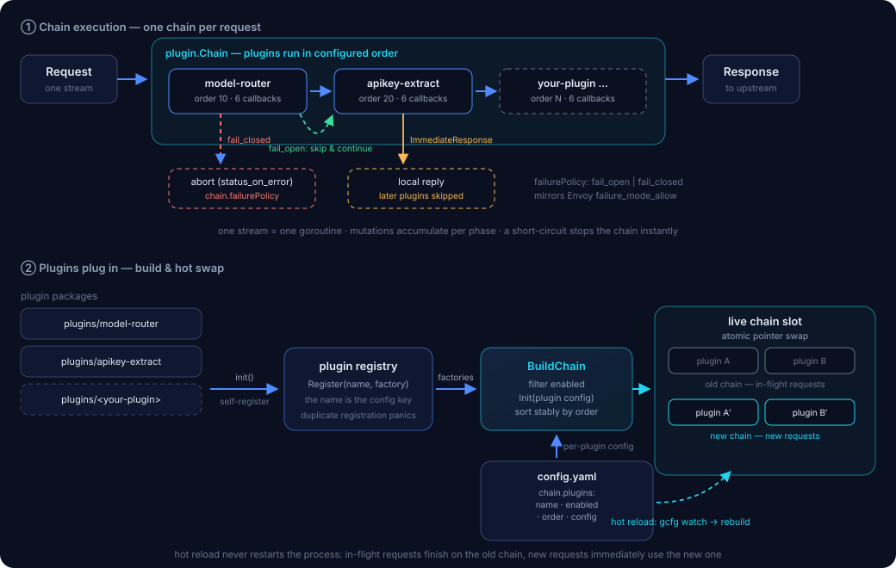

为什么离开 WASM
WASM 插件与 Envoy 同进程共生——内存、故障、运维全部耦合。ext_proc 把插件逻辑放进一个普通进程，代价只是每个处理阶段一次 gRPC 往返。
| 维度 | WASM 插件 | ext-proc |
|---|---|---|
| 内存与尾延迟 | VM 200MB 重建阈值：重建窗口丢 header、阻塞 worker，1s 冷却引发重建风暴 | 没有 VM：不存在重建窗口，配置热更新原子换链 |
| 故障域 | 插件 panic 直接掐流（503 wasm_fail_stream），FAIL_OPEN 静默放行 | 进程隔离：崩溃只影响在途流，fail-open / fail-closed 显式可配 |
| 语言与调试 | TinyGo 限制多，wasm log 黑盒度高 | 任意 gRPC 语言；标准 k8s 工具链，可观测、可断点调试 |
| 部署运维 | 内嵌 Envoy 进程，随网关一起发布 | 独立服务：HPA / PDB / 优雅退出 / 灰度发布全部现成 |
| 流式处理 | HttpBody 逐 chunk 回调，大 body 解析易 panic | FULL_DUPLEX_STREAMED 模式天然适配 LLM SSE 透传 |
架构
每条 HTTP 请求独占一条 gRPC 双向流，Envoy 在五个阶段把请求交给 filter chain，插件对 headers/body 的修改随响应回传给 Envoy。
filter chain 与插件
order 决定顺序，短路即停；插件从 config.yaml 与 init() 自注册两侧接入，构建成链后原子替换——在途请求走旧链，新请求即时生效。

核心特性
不是又一个 demo：故障语义、优雅退出、指标这些数据面的硬功夫都在框架层做好了，插件只写业务。
filter chain 编排
按配置 order 升序执行，任一插件短路（ImmediateResponse）即停止后续插件；插件之间零依赖，只共享请求级状态。
标准化插件接入
六阶段回调 + BasePlugin 空实现 + init() 自注册：新增一个插件只需一个包、五步接入、互不影响。
配置热更新
GoFrame gcfg watch 配置文件，filter chain 原子重建；在途请求继续走旧链直至结束，全程零重启。
双层容错
链级 fail_open / fail_closed 与 Envoy failure_mode_allow 对齐，且每个插件可单独覆盖（plugins[].failurePolicy）：同一条链里鉴权插件 fail-closed、路由辅助插件 fail-open。静默放行必有指标可查、可告警。
可观测性
Prometheus 指标（流数、阶段错误、耗时直方图）+ gRPC 健康检查 + slog 结构化日志，Envoy 侧每阶段延迟可进 access log。
生产工程
三步曲优雅退出（摘流 → 传播延迟 → 有界排空）；gRPC MaxRecvMsgSize 不设限，流控交给 Envoy 背压。
路由级 matchRules
每插件独立持有 matchRules：domain 通配 + path 前缀，首中即停；规则配置深合并覆盖全局，也可按路由关闭单个插件。
示例插件
两个从 Higress 生产场景迁移而来的 LLM 网关插件，语义与原 WASM 实现对齐，配置驱动、可单独开关。
model-router迁移自 higress model-router
从请求体提取模型名并注入路由头，是模型路由 / 多 provider 网关的地基插件。
- JSON / multipart：gjson 按需提取，不整包解析；multipart 表单字段同样支持
- provider/model 前缀拆分：provider 注入独立头，body 模型名可选去前缀
- higress/auto 自动路由：正则规则匹配最后一条 user 消息，未命中回落 defaultModel
apikey-extract可配置多来源提取
把散落在各处的 API Key 归一到目标请求头，供后续插件与上游统一消费。
- 多来源有序回退：x-api-key 头 → Authorization: Bearer → query 参数
- 防泄漏：stripSource 删除来源头（query 来源协议上不可删）
- required 模式：所有来源未命中时 401 拒绝，响应体 JSON 化防注入
快速开始
三步跑通：构建运行 → 接线 Envoy → 发一个请求看插件生效。
# 1. 构建并运行（依赖已 vendor，内网可离线构建） git clone https://github.com/<your-org>/ext-proc.git && cd ext-proc make vendor && make build ./ext-proc # gRPC :50051 · Prometheus :19090/metrics
http_filters: - name: envoy.filters.http.ext_proc typed_config: "@type": type.googleapis.com/envoy.extensions.filters.http.ext_proc.v3.ExternalProcessor stat_prefix: ext_proc grpc_service: envoy_grpc: { cluster_name: ext-proc-cluster } processing_mode: request_header_mode: SEND request_body_mode: BUFFERED # 插件拿完整 JSON/multipart response_header_mode: SEND response_body_mode: NONE message_timeout: 2s failure_mode_allow: false # 鉴权/路由类插件建议 fail-closed
# 2. 发一个请求，观察插件注入的头 curl -s http://localhost:8080/v1/chat/completions \ -H "Content-Type: application/json" \ -H "x-api-key: your-key" \ -d '{"model":"glm-5.3","messages":[{}]}' # 上游收到的请求头（echo / 网关 access log 可见）： # x-higress-llm-model: glm-5.3 ← model-router 注入 # x-extracted-apikey: your-key ← apikey-extract 注入
写一个自己的插件
插件之间零依赖：新建一个包、实现接口、自注册、配置加一段——不同的插件可以由不同的人并行开发。
- 新建包 internal/plugins/<name>，嵌入 plugin.BasePlugin，只覆写关心的阶段
- 实现接口 六阶段回调按需实现，Init 解析自己的配置段并给全默认值
- 自注册 init() 里 plugin.Register，并在 main.go 追加一行匿名导入
- 配置加段 config.yaml 的 chain.plugins 增加 name/enabled/order/config
- 表驱动测试 用 plugintest 的 mock Context 断言 header/body 操作，make test 全绿
package myplugin type MyPlugin struct { plugin.BasePlugin // 只覆写关心的阶段 / override only the phases you need } func New() plugin.Plugin { return &MyPlugin{} } func init() { plugin.Register("my-plugin", New) } func (m *MyPlugin) Name() string { return "my-plugin" } func (m *MyPlugin) OnRequestHeaders(ctx plugin.Context, h extproc.AllHeaders) error { // 短路：本地响应终止请求；放行：返回 nil 即可 if _, blocked := h.Get("x-block"); blocked { return ctx.CancelRequest(403, nil, "blocked by my-plugin") } return nil }
chain: failurePolicy: fail_closed plugins: - name: model-router enabled: true order: 10 config: { modelToHeader: x-higress-llm-model } - name: my-plugin enabled: true order: 20 config: { yourKey: yourValue } # 插件私有配置，由插件自己解析